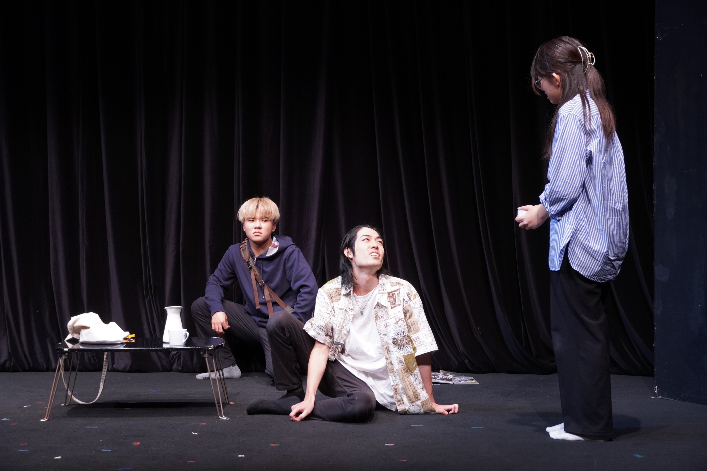
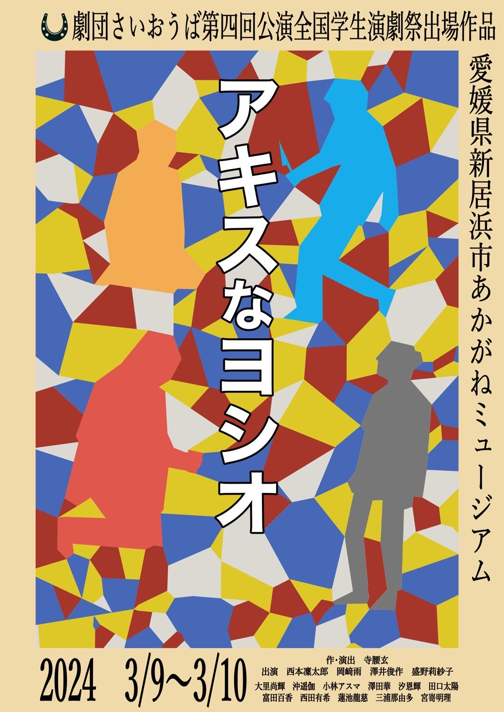
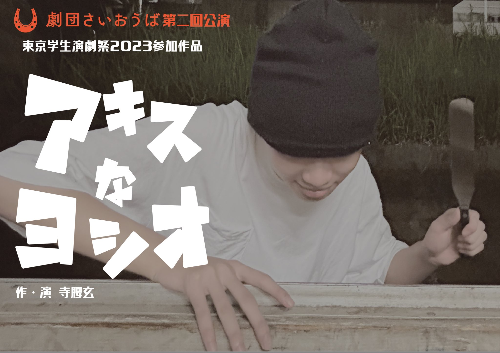

第二回公演「アキスなヨシオ」

―――空き巣専門なんで、マジで。
あらすじ
とある寂れたアパートの一室。白昼堂々空き巣に入り込み、部屋の物色を進めていた泥棒・坂下は、うっかり住人である倉本に見つかってしまう。彼女を縛り上げ通報を逃れようとする坂下だったが、どうも様子がおかしい。やがて、彼は次第に倉本の「事情」に巻き込まれ、壮大な嘘をつかなくてはいけなくなってしまう......
作品紹介
王子小劇場にて開催された東京学生演劇祭2023への参加作品。全国学生演劇祭への進出を決め、佐藤佐吉賞の受賞に繋がった、さいおうばにとって転換期とも呼べる舞台である。本作は「超人の友人」の直後から約一か月で本番に臨むという過密なスケジュールで稽古が行われており、全てが終わった後には全員魂が抜けたような状態になった。だが一方で初めてお呼びした役者も多い中、短期間で確かな信頼感を生んだ現場とも言えるだろう。
【作・演出】寺腰玄
【出演】
西本凜太郎
盛野莉紗子
澤井俊作
岡﨑雨
【スタッフ】
演出助手
安藤岳、三浦那由多
安藤岳、三浦那由多
舞台監督
西田有希
西田有希
音響
宮嵜明理
宮嵜明理
照明
汐恩輝
汐恩輝
制作
大里尚輝
大里尚輝
会計
田口太陽
田口太陽
PV作成
寺腰玄
寺腰玄
【会場】
王子小劇場

